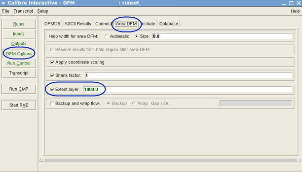
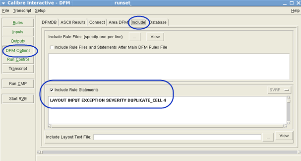
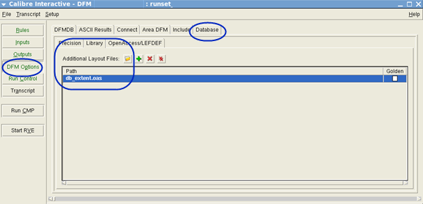

Enter the
DB_EXTENT settings in the Calibre Interactive GUI and import the
DB_EXTENT layer file to the Calibre CMPAnalyzer rerun flow. This
ensures data consistency between the DFM databases.
Note: The DB_EXTENT layer and top
cell name in the modified runset for the Calibre CMPAnalyzer rerun
flow must be the same as in the runset used for the original CMP
analysis.
Procedure
- From a command line, set the following environment
variable according to your shell environment:
setenv CMP_ENABLE_RERUN_SIMULATION 1
This keeps the necessary data during the original
DFM database creation for further re‑extraction and simulation.
Alternatively, you can set the environment variable
in the Calibre Interactive GUI by selecting Setup > Set Environment and clicking the Add button, or you can add the following
keyword to your runset files:
*dfmEnvVars: {CMP_ENABLE_RERUN_SIMULATION 1 Runset}
- Open the runset file in the Calibre Interactive
for DFM GUI.
calibre -gui ‑dfm original_runset
- Select DFM Options in
the left pane of the GUI.
- Click the Area DFM tab.
- Select the Extent
layer checkbox and enter the layer number and datatype
(optional) for the DB_EXTENT layer in the original DFM database.
Figure 1. DB_EXTENT LAYER Number
- Click the Include tab.
- Select the Include
Rule File Statements checkbox and enter the following
rule statement in the text field:
LAYOUT INPUT EXCEPTION
SEVERITY DUPLICATE_CELL 4
This statement suppresses the top‑cell error for
name conflicts due to multiple layout records. See “Layout Input Exception Severity”
in the Standard Verification Rule Format (SVRF)
Manual.
Figure 2. Include Rule File Statement
- Click the Database tab.
- Click the Library tab
and open the DB_EXTENT layer file for import to the Calibre CMPAnalyzer
rerun flow.
This is the OASIS or
GDSII DB_EXTENT layer file saved in “Exporting the DB_EXTENT Layer”. The import occurs during the run and does not require any actions
for merging.
Figure 3. Import Extent Layer Path
- Save the settings for the DB_EXTENT layer in
the modified runset.
- Perform the Calibre CMPAnalyzer rerun flow using
the modified runset (with the DB_EXTENT layer settings) along with
the other settings used by the Calibre CMPAnalyzer rerun flow. See “Performing the Calibre CMPAnalyzer Rerun Flow”.